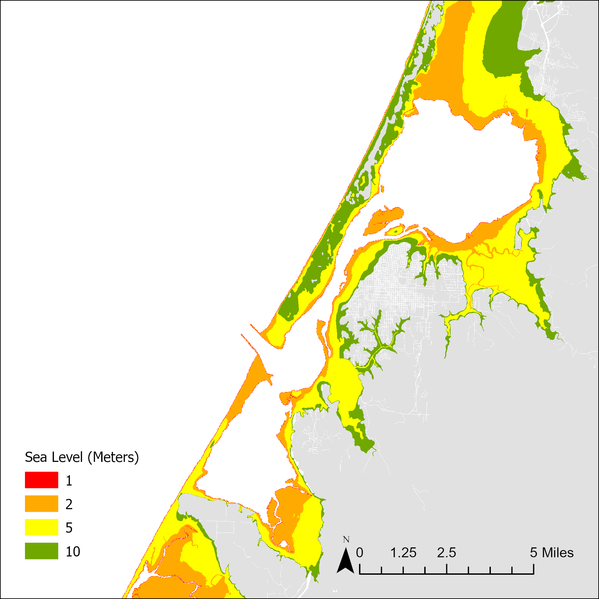

Measuring Sea Level Rise Around Humboldt Bay, CA
Adam Day | October, 2024
METHODS
The purpose of this lab was to measure sea level rise around Humboldt Bay and analyze what areas would be impacted at various flood levels. Digital Elevation Model (DEM) data of Humboldt County, CA was used in this analysis. After importing the DEM data to ArcGIS Pro, a review of the map’s spatial reference system was made to ensure the map projection was set for NAD 1983 UTM Zone 10 North. Once the DEM data was configured correctly, the Raster Calculator tool was used to find the elevations at or below sea level. This was achieved by using the following formula:
DEM_Clipped.img <= 0
The resulting raster export was then saved as MSL_2010.img. The same process was repeated for areas that are less than or equal to 1 meter with the resulting raster saved as Below_1m.img. To identify locations where a sea level rise of above 0m but below 1m would flood Humboldt Bay, the Raster Calculator tool was used to subtract the MSL_2010.img from Below_1m.img raster. The same process was repeated multiple times to produce rasters which show the potential areas of inundation for 2-, 5-, and 10-meters sea level rise. Figure 1 below shows a map of the areas within Humboldt Bay that are affected by these various sea level rises.
A second analysis was performed using the data produced from the first analysis. By use of Humboldt County Parcels data, which contains information on each parcel’s zoning designation, we could see the extent of impact of sea level rise in each parcel based on its zoning code. To achieve this, the field “EXLU4”, within the attribute table of the Humboldt County parcel data, was summarized to give a count of each parcel’s zoning type based on the following groupings:
This data was joined back to the original attribute table of the Humboldt County Parcel data by use of the Joins and Relates tool, joining them via the “EXLU4” field. After the join was complete, the data was extracted onto its own feature layer and saved. The Polygon to Raster tool was then used on this layer to convert the polygon land use to a raster rile. Cellsize for this new raster was copied from the DEM_Clipped.img raster to ensure consistent measurements. Next, the new parcel raster was multiplied by the 1-meter inundation raster and a new “Area” field was added to the new raster. This field calculated the area of impact by hectare by using the following formula within the Field Calculator tool:
‘Count’ * 0.008035<= 0
This process was repeated for the 2-, 5-, and 10-meter inundation rasters.
Finally, the DEM_Clipped.img raster was reclassified using the Reclassify tool to allow for a classification method for the raster data. The classification method used was Manual with break values set to 0, 1, 2, 5, and 10, leaving the last value as the maximum value in the raster data.
RESULTS
Figure 1 below shows the areas of Humboldt Bay impacted by sea level rising of 1, 2, 5, and 10-meters.
Figure 1: Sea Level Rise Around Humbold Pay
As made evident by the map, significant portions of the in-land bay area around Humboldt bay would be impacted by just 2-meter change in sea level. Further beyond that, many areas would feel impact with a sea level change of 5 meters as far in-land in some areas as 2.5 miles. While much of the coast itself would face impact with as little as 1 meter in sea level rise, there is a sizable portion of the northern portion of the bay that would not see impact until a 10-meter sea level rise. This is made evident by the green areas to the north of the bay.
Table 1 below represents the area of impact by zoning designations and is measured in hectares.
| Land Use (Code) | Land Use (Type) | Sea Level Rise: 1 Meter | Sea Level Rise: 2 Meters | Sea Level Rise: 5 Meters | Sea Level Rise: 10 Meters |
|---|---|---|---|---|---|
| 1 | City | 162150 | 157919 | 149666 | 144124 |
| 2 | Agricultural | 32 | 555 | 1381 | 1844 |
| 3 | Residential | 20 | 2612 | 8691 | 12158 |
| 4 | Commercial | 3 | 23 | 266 | 752 |
| 5 | Industrial | 0 | 3 | 33 | 50 |
| 6 | Recreational | 6 | 76 | 237 | 542 |
| 7 | Tribal | 47 | 1014 | 1650 | 2120 |
| 8 | Public | 0 | 0 | 1 | 1 |
| 9 | Other | 4 | 61 | 337 | 670 |
As made evident by the data, the city would face much of the impact throughout the various sea level rises. This must be taken into consideration for future development of storm water protection plans and/or coastal resilience projects.
Figure 1 below shows a map of the impacted area of study using the Landsat 8 imagery.